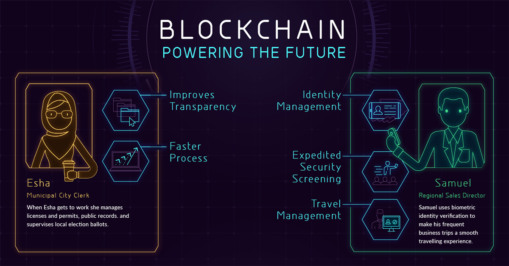

Los expertos comparan la llegada del blockchain con hitos como la integración de los ordenadores en el uso doméstico o el desarrollo de Internet, es decir, un sistema que cambiará nuestra forma de entender los negocios y la sociedad. Uno de sus mayores potenciales está en los llamados smart contract o contratos inteligentes, es decir, con la tecnología del blockchain se podrán hacer acuerdos y transacciones de forma confiada sin revelar información confidencial entre las dos partes y sin la necesidad de “árbitros”, como pagos a distribuidores o, por ejemplo, el alquiler de un coche de forma online.
